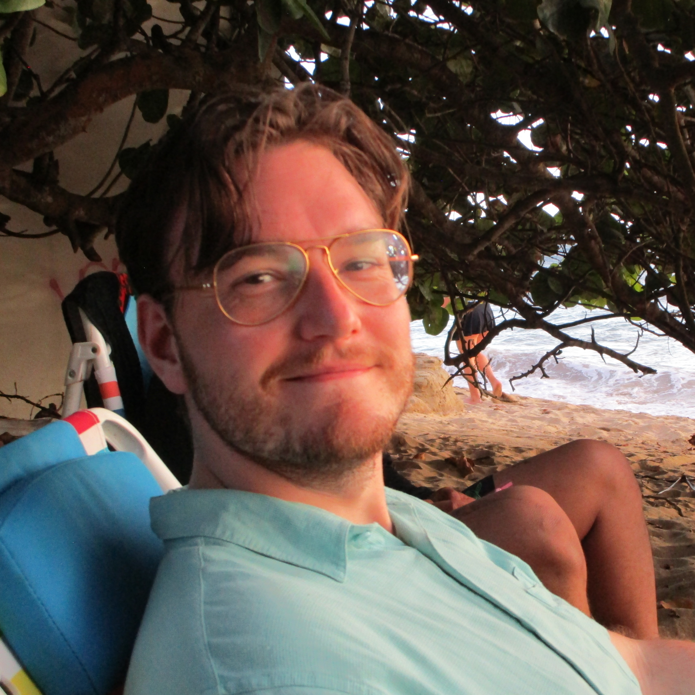

Introducing Sidney Slon

A bit about myself:
I'm from NYC born and raised, and graduated from Binghamton University in 2021 with a Bachelor's in Environmental Anthropology. I am passionate about understanding the future of green tech and sustainability, considering modern political movements, climate change and cultural shifts. I am eager to use my skills as a writer and researcher to grow communities' understanding on these topics, and provide insights for dealing with the volatile nature of today's climate. Being from NYC, I also care deeply about my community, which is partly why I chose to become a journalist. Paring my interests with local reporting would be a dream come true.
Here are my top three favorite journalism stories:
- The Really Big One, published in The New Yorker by Kathryn Schulz. This article discusses the historic and scientific risks of the Cascadia Subduction Zone, a "mega" fault line that runs from Northern California to British Columbia. It's a fascinating read and terrifying one, as it reveals the potential for a devastating earthquake is not 'if', but 'when'. Over the last 10,000 years, approximately 40 earthquake events have originated from this fault line, averaging about 250 years in between each event - the last recorded tsunami from the Cascadia Subduction Zone was in 1700, and reached both the western coast of North America and Japan. I first read this article in 2015 when it was published, and a decade later, I still think about it.
- Geoengineering Won’t Save Us From Global Warming, by Bob Berwyn for Inside Climate News. At the time I am typing this, this article is only two days old and I find it to contain a message I wish more people were discussing. I hold a degree in Environmental Studies and Anthropology from my undergraduate, and one of the most discussed topics in environmental academia is the concept of geo-engineering a way out of climate change; a practice typically highlighted by those looking to 'reverse' the damage of greenhouse gas emissions. Many environmental scientists however, as discussed in this article, see geo-engineering solutions (like machines that 'suck' CO2 out of the air, or reflective materials on ice sheets) as avoiding more permanent solutions, much like placing tape on a broken fishtank. It may seem to temporarily address climate change, but without reducing greenhouse gas emissions, these tactics simply won't be enough to stop the eventual tipping points.
- Finding Beauty In A Prison Yard, published in the New York Times by Robert Lee Williams. This is an opinion piece, but I found it profoundly beautiful. Not only are the visuals, by Gaia Alari, incredible, but they paired with the narrative so perfectly, shifting visions of tree limbs and trunks into prison bars. The piece also highlights struggles that incarcerated people face in a very human way, addressing mental health and a connection to nature. Reading this, I really found myself considering how much I take parks and trees for granted, and I ended up saving the article to go back to. For me, it begs the question: why don't more prison yards have trees? For individuals spending decades, or their entire lives within prisons, why would a tree be considered a privelege?